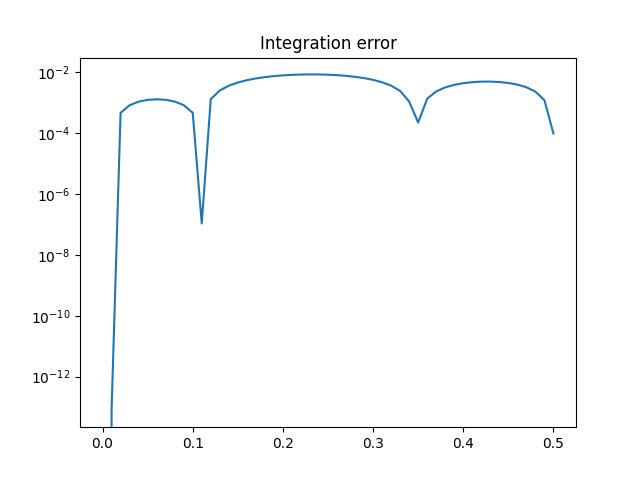

Note
Click here to download the full example code
Solve an Initial Value Problem¶
Let us consider an Initial Value Problem (IVP), consisting of an Ordinary Differential Equation (ODE), potentially depending on a set of design variables, a time interval, and a set of initial conditions for the state of the system.
from gemseo.algos.ode.factory import ODESolverLibraryFactory
from gemseo.algos.ode.ode_problem import ODEProblem
from gemseo.typing import RealArray
from matplotlib import pyplot as plt
from numpy import array
from numpy import atleast_1d
from numpy import linspace
from numpy import zeros
Out:
/builds/gemseo/dev/gemseo-petsc/src/gemseo_petsc/linear_solvers/petsc_ksp.py:41: DeprecationWarning: Please import `issparse` from the `scipy.sparse` namespace; the `scipy.sparse.base` namespace is deprecated and will be removed in SciPy 2.0.0.
from scipy.sparse.base import issparse
/builds/gemseo/dev/gemseo-petsc/src/gemseo_petsc/utils/conversion.py:32: DeprecationWarning: Please import `issparse` from the `scipy.sparse` namespace; the `scipy.sparse.base` namespace is deprecated and will be removed in SciPy 2.0.0.
from scipy.sparse.base import issparse
<frozen importlib._bootstrap>:228: DeprecationWarning: builtin type SwigPyPacked has no __module__ attribute
<frozen importlib._bootstrap>:228: DeprecationWarning: builtin type SwigPyObject has no __module__ attribute
<frozen importlib._bootstrap>:228: DeprecationWarning: builtin type swigvarlink has no __module__ attribute
Let us consider the following IVP:
where \(t\) denotes the time, \(y\) is the state variable, and \(k\) is a design parameter.
We define an initial state and a time interval for the IVP, as well as a design parameter \(k\).
init_state = 1.0
times = linspace(0.0, 0.5, 51)
k = 1.0
The function defining the dynamics of the ODE is the following:
def rhs_func(t: float, y: RealArray, k: float) -> RealArray:
st_dot = y.copy()
st_dot[0] = k * t * y[0] ** 2
return st_dot
We define the Jacobian of the dynamics with respect to the state.
def compute_jac_wrt_state(
t: float,
y: RealArray,
k: float,
) -> RealArray:
jac_wrt_state = k * 2 * t * y[0]
return array([[jac_wrt_state]])
These functions are assembled into an ODEProblem.
class SmoothODEProblem(ODEProblem):
def __init__(self) -> None: # noqa: D107
self.__jac_wrt_state = zeros((1, 1))
self.__k = k
super().__init__(
self.__compute_rhs_func,
jac_function_wrt_state=self.__compute_jac_wrt_state,
initial_state=atleast_1d(init_state),
times=times,
)
self.__jac_wrt_desvar = zeros((1, 1))
def __compute_rhs_func(self, time, state):
return rhs_func(time, state, self.__k)
def __compute_jac_wrt_state(self, time, state):
self.__jac_wrt_state[0, 0] = compute_jac_wrt_state(time, state, self.__k)
return self.__jac_wrt_state
problem = SmoothODEProblem()
The IVP can be solved using the algorithms provided by gemseo-petsc.
As an example, here the solution to the IVP is found using
the Runge-Kutta algorithm.
ODESolverLibraryFactory().execute(
problem,
algo_name="PETSC_ODE_RK",
time_step=1e-2,
maximum_steps=1000,
rtol=1e-3,
use_jacobian=True,
)
Out:
TS rejected steps SNES : 1
The numerical solution can be compared with the analytical solution of the ODE.
analytical_sol = 2.0 * init_state / (2.0 - k * times * times * init_state)
error = abs(analytical_sol - problem.result.state_trajectories[0])
plt.semilogy(times, error)
plt.title("Integration error")
plt.show()

Total running time of the script: ( 0 minutes 3.378 seconds)
Download Python source code: plot_smooth_ode.py